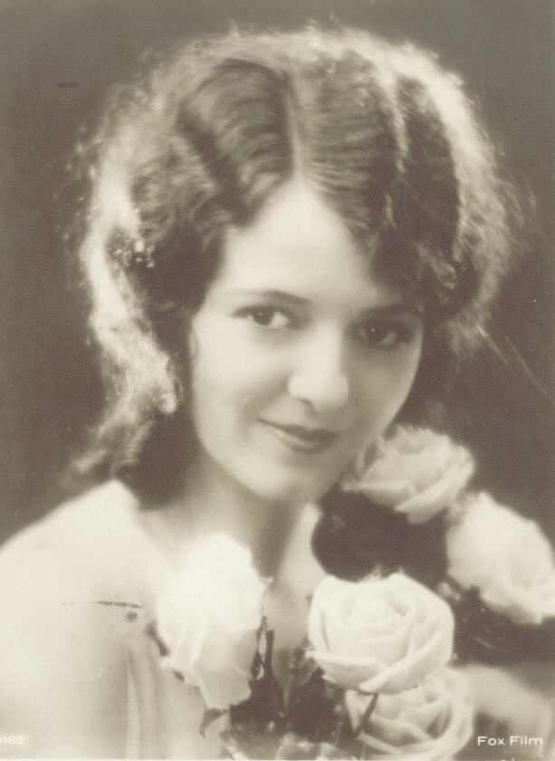

| HOME | SITE MAP |
** NOTE:
This list may be copied with the following credit:
The Lesbian History Project
http://www-lib.usc.edu/~retter/main.html
Please place attribution in the first few lines of your web site or paper.
Gracias!
** Corrections and additions are welcome. Please include sources! Send to retter@skat.usc.edu
** NOTE/DISCLAIMER:
What is a lesbian is always a question...
Some of the women on this list were/are
lesbian-identified (closeted and not);
others were/are
bisexual, "romantic friends," "lesbian-like," or "lapsed lesbians."
Some were cross-dressers or
passing women, and some Amazon-like queens whose orientation has not been
unequivocably determined.
We encourage further research on any
woman listed.
** The information found on this list comes from printed and online sources and we are not responsible for errors in those sources.
** We do receive communications from people unhappy about someone being on the list. We have linked some of these messages directly to the name of the woman in question. This is part of a specific woman's history and shows why many women never came out. See "We get letters" next to her name.
** Sorry, but we cannot provide research services that take more than a few minutes, without charging a fee. This is because we have one staff person and no dependable funding. The fees help us to maintain the project and provide services. Usually (not always) the fee is $25/hr with a one hour minimum.
** woc = indicates a woman of color

Janet Gaynor. First woman to win an Oscar (1928).
Abbott, Bernice - photographer
Abdo, Judy - mayor of Santa Monica, Ca.
Acosta, Mercedes de - lesbian groupie, wrote autobiography
Adam, Margie - musician
Web site
Addams, Jane - social reformer
Agnesi, Maria - mathematician
Agnodice - doctor
Akerman, Chantal - filmmaker
Albrecht, Lisa - civil rights commissioner
Allegra, Donna - writer, woc
Allen, Paula Gunn - writer, activist, woc
Link
Allison, Dorothy - writer
Anthony, Susan B. - suffragist
Anderson, Emily - photographer
Anderson, Margaret - publisher
Anzaldua, Gloria - activist, writer
Archer, Nuala - writer
Arnold, June - writer
Arobateau, Red Jordan - writer, woc
Link
Arrowsmith, Pat - peace activist
Arthur, Helen - attorney, associated with Lillian Wald and Agnes
Morgan
Arzner, Dorothy - film director
Augspurg, Anita - suffragist
Austen, Alice - photographer
Baez, Joan - singer, activist (reports brief venture into Lesbian Nation)
Baker, Josephine singer, woc
Baker, Sara J. doctor
Baldwin, Tammy - Wisconsin State Assemblyperson, now U.S.
Congresswoman (first openly elected lesbian to Congress
Balman, Anna poet
Bancroft, Ann explorer
Bankhead, Tallulah actress
Bannon, A. - writer
Barker, Victor - (Lillian Arkel Smith) army officer
Barnes, Djuna novelist
Barney, Natalie art patron, member paris lesbian salon
Barry, James M. doctor
Baum, Barbara received homophobic military discharge
Baylis, Sarah author
Beach, Sylvia publisher, bookstore owner
Beck, Pia singer, pianist
Beeren, Bet Van cafe owner
Behn, Aphra - writer
web site
Belinfante, Frieda cellist
Bellos, Linda politician
Ben-Shalom, Miriam military discharge case
Benedict, Ruth anthropologist
Bentley, Gladys singer, woc
Berber, Anita dancer
Best, Connie entrepreneur
Birtha, Becky - writer, woc
Bishop, Elizabeth poet
Link
Blackwomon, Julie - writer, woc
Blais, Marie-Claire - writer
Blaman, Anna novelist
Bloch, A. writer
Blood, Fanny - see Mary Wollstonecraft
Blunt, Frank - (Anna Morris) passing woman
Boadicea Amazon queen
Bogus SDiane writer, woc
Bonheur, Rosa artist, cross dresser
Bonney, Anne pirate
Bono, Chastity - daughter of Cher, activist
Bordereau, Renee wrote autobiography
Borgatti, Reneta painter
Bouchard, Emilie M. actress
Boulanger, Lili composer
Bowen, Elizabeth writer
Bowles, Jane writer (used pseudonym Sydney Auer)
Boye, Karin poet
Bradley, Katherine writer (used pseudonym Michael Bradley)
Brant, Beth writer, activist, woc
Link
Braunschweig, R. Von writer, activist
Bright, Susie writer, activist
Bronte, C. - author, wrote passionate letters to Ellen Nussey and Mary
Taylor
Brooks, Romaine painter
Brossard, Nicole - writer
Broumas, Olga poet
Brown, Rita Mae author, activist
Brunier, Andreas professor
Bryher, Winifred - writer
Bunch, Charlotte activist, theoretician
Bunnhilde Amazon queen
Burford, Barbara - writer
Burger, Johann
Bussy, Dorothy S. wrote autobiography
Butler, Eleanor - partner of Sarah Posonby (The Ladies of Llangolen)
Cahun, Claude - (born Lucy Schwob) - photographer
Web Site
Califia, Pat writer, s/m activist
Cameron, Barbara - activist, woc
Cammermeyer, Grethe - military cause celebre, running for Congress.
Link
Carlyle, Jane - intimate of Geraldine Jewsbury
Carr, Emma - chemist, shared home with Mary Lura Sherrill
Carson, Rachel - biologist, wrote Silent Spring
Web Site
We get letters
Cassatt, Mary - artist
Link
Carter, Elizabeth - scholar, partner of Catherine Talbot
Cather, Willa novelist
web site
Catherine the Great Empress of Russia
Cavin, Susan U.S. theoretician
Chapman, Tracy - folksinger, woc
Charke, Charlotte actress
Cho, Margaret - comedian
Christian, Meg - musician
Christina Queen of Sweden
Chrystos poet, woc
Chughtai, Ismat - writer, woc
Cibber Clarke, Charlotte - memoir of multi faceted woman, included
lesbian experiences
Clackum, Fannie military discharge case
Clark, Karen - Minnesota State Assemplyperson
Clarke, Cheryl writer, woc
Clave, Emma opera
Cliff, Michelle - writer, woc
Clinton, Kate - comedian
Cobbe, Frances P. activist
Colette novelist, bi
Colquhoun, Maureen politician
Compton-Burnett, I. novelist
Cook, Eliza poet
Marghreta Cordero - Composer, Performer, Sculptor, woc
Cordova, Jeanne activist, publisher
web site
Corelli, Marie writer, partner of Bertha Vyver
Corinne, Tee artist, activist
Web
Site
Cornell, Katharine actress
Costanza, Midge - White House aide in Carter Administration. (Chico
list)
Craft, Ellen passing woman, woc
Cramer, Joanna passing woman
Crow, Emma artist
Cruikshank, M. activist, academic
Curb, Rosemary editor
Curiale, Angela custody case
Cushman, Charlotte actress
D'Alencon, Emilienne dancer
D'Arc, Joan military leader, uppity woman
Bibliography
Daly, Blyth actress
Daly, Mary theoretician
Damielle, Miria activist
Damon, Betsy - artist
Dauthenday, Elisabeth activist
Davenport, Doris - poet, woc
Davis, Angela - activist, woc
Links
Davis, Tiny singer, woc
DeGeneres, Ellen - comedian, actress
Web
Sites
De La Pena, Terry - writer, woc
De La Tierra, Tatiana - writer, activist, woc
Web Site
Deitch, Donna film director
Deming, Barbara activist
web site
Denman, Rose Mary minister, activist
Denser, M. writer, Brazil
Despres, Francoise wrote autobiography
DeVeaux, Alexis - witer, woc
Dewson, Mary ("Molly") social reform and political activist
Diaman, N.A. novelist
Dickinson, Emily poet -
web site
Diner, Helen writer, used pseudonym Sir Galahad
Dixon, Clarissa - novelist
Dobkin, Alix singer, activist
Link
Doolittle, Hilda poet
Dreier, M. union activist
Duc, Aimee novelist activist
Duffy, Maureen - writer
Dunbar-Nelson, Alice M. writer, woc
Duncan, Isadora dancer
Dunye, Cheryl filmmaker, woc
Dupin, Amandine Aurore writer (used pseudonym George Sand)
Dworkin, Andrea writer, anti-pornography activist
Earhart, Amelia aviator -
web site
Edwards, Sally athlete
Eleanor of Aquitane Amazon queen
Elizabeth I Amazon queen
Ellis, Edith Lees writer, lecturer
Ellis, Ruth - long-lived lesbian, born 1899, still living, woc
Web Site
Erauzo, Catalina de adventurer, passing woman
Eshuis, Evelien politician
Etheridge, Melissa - singer
Evans, Mary Anne writer (used pseudonym George Eliot)
Faithful, Emily activist
Farnsworth, Susan - Maine House of Representatives
Feldman, Maxine - singer, composed Angry Atthis, early lesbian
political song
Fernandez, Dominique - novelist
Ferron - folksinger
Fields, Mary active in the wild west, woc
Flanner, Janet journalist
Flowers, Yvonne - activist, woc
Folayan, Ayofemi - writer, activist, woc
Forster, Jackie activist
Foster, Jodie - actress, director (On Chico list)
Frye, Marilyn - theoretician
Frith, Mary author
Fuller, Loie dancer
Fuller, Margaret journalist
Gage, Susann lesbian health care activist Los Angeles
Gallienne, Eva le actress
Garfield, Roslyn - Town Moderator Provincetown Mass.
Gay, Emma Jane photographer
Gaynor, Janet - actress, first woman to win an Academy Award
Gearhart, Sally writer, activist
Germain, Diane - activist, writer, humorist, Califia survivor
Gidlow, Elsa - activist,poet
Web
Site
Gilbert, Ronnie - folksinger
Gilpin, Laura - photographer
Link
Gittings, Barbara
Link
Ginzburg, Lidiia - writer, literary theorist
Glanville-Hicks - composer
Glick, Deborah - NY State Assemblyperson
Goldberg, Jackie - 60's activist, Los Angeles City Councilperson
Gomez, Jewelle - writer, activist, woc
Gordon, Laura De Force journalist
Gorman, Harry - railroad worker
Gould, Janice - writer, woc
Grahn, Judy poet
Gramont, Elizabeth de duchess
Grew, Mary activist
Grewel, Annemarie politician
Griffin, Susan writer, activist
Grimke, Angelina Weld poet, writer, woc
web site
Grimke, Sarah Moore abolitionist, needs more research
Grumbach, Doris - writer, critic
Hacker, Marilyn poet
Hall, Murray - politician, passing woman
Hall, Radclyffe - writer, "The Well of Loneliness"
Bibliography
Hamilton, Alice doctor, needs more research
Hamilton, George - (Mary Hamilton) physician, passing woman
Hammer, Barbara film director
Hansberry, Lorraine writer, woc
Hanscombe, Gillian - activist
Harjo, Joy - poet, woc
Harper, Frances writer, woc
Harris, Sherry - city council member, first out AFAM lesbian
elected official, woc
Hart, Alberta Lucille doctor, wrote autobiography
Hatshepsut Queen of Egypt
Hawarden, Viscountess C. photographer
Heap, Jane art patron
Heymann, Lida Gustava activist
Heyword, Carter Episcopal Church priest and activist
Hickock, Lorena journalist, E. Roosevet's "special friend"
Hoagland, Sarah Lucia theoretician, co-edited separatist
anthology
Hoch, Hannah painter
Holcomb, Sarah photographer
Holiday, Billie singer, woc
Hosmer, Harriet artist
How, James - (Mary East) pub owner, passing woman
Hunter, Alberta singer, woc
Hurston, Zora Neale - writer, anthropologist, woc
Web Site
Hutton, Kate - seismologist Caltech
Ian, Janis - singer
web site
Indigo Girls (Amy Ray and Emily Saliers) - musicians
Web Links
Ireland, Patricia - NOW President, bi
Jackson, Bessie singer, woc
Jackson, Delores minister, woc
James, Alice wrote autobiography
Janitschek, Maria activist
JEB (Joan E. Biren) photographer, video producer
Jeffreys, Sheila - writer, historian
Jewell, Terri - writer, activist, woc
Jewett, Sarah Orne novelist (romantic friends)
Jewsbury, Geraldine novelist, intimate of Jane Carlyle
We get letters
Jex-Blake, Sophia doctor
Jimenez, Amparo columnist
Jin, Jui Amazon warrior
Johansson, Klara author
Johnson, Georgia D. writer, woc
Johnson, Holly - singer
Johnson, Sonia writer, activist
Johnston, Frances B. photographer
Jordan, Barbara - congresswoman, teacher, inspiration, woc (see The
Advocate, 3/96)
Judith - Amazon queen
Jullion, Jeanne custody case
Kahlo, Frida artist -
web site
Chronology of Frida's life
Link
Kellor, F. arbitrator
article about her
Kemble, Fanny actress
Kenney, Jessie radio officer, needs more research
Kerwinieo, Ralph (Cora Anderson) passing woman
Key, Ellen feminist, needs more research
Kim, Willyice - writer, woc
King Billie Jean - tennis champion, bi
Klimke, Anna artist
Kovalevsky, Sonya mathematician
Kozachenko, Kathy appointed to office
Krause, E. author, activist
Kuokichi, Otake painter, woc
Labe, Louise poet
Lagerlof, Selma author
Lai Jong, Lola - writer, woc
Lakich, Lili - artist
Lakshmi, Bai Amazon queen, woc
Lang, k.d. - musician
Link
Laurencin, Marie artist
Lavner, Lynn - comedian
Leal, Susan - Board of Supervisors San Francisco
Lebowitz, Fran - writer
Leduc, Violette novelist
LeGuin, Ursula - novelist
Levertov, Denise - poet
Lewis, Mary Edmonia sculptor, woc
Lian-Yu, Ch'in Amazon warrior, woc
Linck, Catherine
Lister, Anne - writer (diarist)
Lobdell, Joseph - (Lucy Lobdell) passing woman
Lorde, Audre poet, writer, activist, woc
Loulan, Jo Anne author, sex therapist, bi
Lowell, Amy poet
Lucas, Ruby singer, woc
Luhan, Mabel Dodge
Lulu entrepreneur
Lyon, Phyllis homophile activist, DOB cofounder
Mabley, Moms entertainer, woc
Maclane, Mary writer
Madeleine, Marie - baroness
Manning, Rosemary writer
Mansfield, Katherine writer
Manus, Rosa feminist, needs more research
Marbury, Elizabeth activist
Margolyes, Miriam actress
Martin, Del homophile activist, DOB cofounder
Martin, Violet F. writer, used pseudonym Martin Ross
Martinac, Paula - writer
Martineau, Harriet political activist
Matson, Milton - novelist, partner of Edith Sommerville
Maupin, Mlle. opera singer, cross-dresser, swordswoman
web site
Maxwell, Elsa b patron of the art
McGlaughlin, S. filmaker
McGreivy, Susan attorney
McHarris, Jim (Annie Lee Grant) passing woman. woc
Mead, Margaret anthropologist
Meetelen, Maria writer
Menken, Adah I. actress
Mew, Charlotte poet
Michel, Louise anarchist
Migden, Carole city supervisor
Millay, Edna St. Vincent poet
Miller, Isabel novelist, pseudonym for alma routsong
Miller, Madora Kennedy feminist
Miller, Margaret custody case, woc
Millet, Kate writer
Millington, June musician, woc
Web site
Minkowitz, Donna - journalist, Pulitze nominee
Molloy, S. - writer, woc
Mitchel, Maria scientist, needs more research
Monnier, Adrienne wrote autobiography
Moore, Marianne poet
Moraga, Cherie writer, woc
Moreno, Marguerite actress
Morgan, Claire writer
Morgan, Mary judge
Morgan, Robin - writer, activist
Mossbacher, Dee - producer, activist
Mossel, Kaat political activist
Nachman, Elana Dykewomon writer
Navratilova, Martina - athlete
Nestle, Joan - activist, writer, archives cofounder
Nightingale, Florence nurse of crimean war fame
Nin, Anais novelist, bi
Noble, Elaine - first out lesbian elected to state legislature
Nzingh Amazon queen, woc
O'Neil,Nance actress
Onodera, Midi film maker
Ouida novelist, needs more research
Ottinger, Ulrike filmaker
Oxenberg, Jan filmmaker
Paget, Violet novelist, used pseudonym Vernon Lee
Parker, Pat - poet, activist
Parkhurst,Charley (Charlotte Parkhurst) stagecoach driver
Parmar, Pratibha filmaker
Parnok, Sofiia - poet, literary critic
Peabody, Elizabeth transcendentalist, needs more research
Penelope, Julia - activist, co-edited separatist anthology
Penthesileia - Amazon Queen
Phelps, Johnnie - veteran, activist
Web Site
Philips, Katherine - poet
Phranc - folksinger
Web Site
Pinson, Luvenia writer, woc
Pirie, Jane - educator, partner of Marianne Woods
Pizarnik, A. - writer, woc
Maria Louise Pool - writer and Caroline M. Branson, her companion
Link
Pope Joan/John VIII - circa 850
Pougy, Liane de dancer
Pratt, Minnie Bruce - writer
Web site
Prechac, Jean de wrote autobiography
Queen Anne - regent
Radice, Anne-Imelda - was acting head of NEA
Raicho, Hirazuka writer
Rainey, Ma singer, woc
Ramos, Juanita - editor, activist, woc
Randle, Vicki - musician, woc
Link
Raven, Arlene artist
Raylan, Nicholas de - soldier, passing woman
Recamier, Julie art patron
Renault, Mary Novelist
Reuling, Josine writer
Reuter, Gabrielle novelist, activist
Rich, Adrienne poet, writer
Rios, Cassandra - writer, Brazil
Riley, Kathy custody case
Robertson, Ethel F. writer (used pseudonym Henry Richardson)
Rodriguez, Aleida - writer, woc
Roosevelt, Eleanor social activist
Roffiel, R. - writer, woc
Romo-Carmona, Mariana - writer, woc
Rozema, P. filmaker
Rueling, Anna activist
Rukeyser, Muriel poet
Rule, Jane - novelist
Rushin, Kate - writer, woc
Russ, Joanna - writer
Ryan, Caitlin health care activist
Sabol, Terri custody case
Sackville-West, V, author
Sampson, Deborah - (Robert Shurtleff) cross-dressed, fought in
revolutionary war, may have been a woc.
We get letters
Sapphire - writer, woc
Sand, George novelist
Sandman, Gertrude painter
Sappho - poet
Sarton, May poet, writer
Saxe, Susan weather underground
Schiaparelli, Elsa coutourier, needs more research
Schockley, A. - writer, woc
Schreiner, Olive writer, (used pseudonym Ralph Iron)
Scott, Sarah - author
Scudder,Vida wrote autobiography
Scudery, Mlle de - novelist, bi
Schwarzenbach, Annemarie - Swiss novelist
Seward, Anna poet
Shibley, Gail - Oregon House of Representatives
Shockley, Ann writer, woc
Shurtlieff, Robert see Deborah Sampson
Simcox, Edith novelist
Sintenis, Renee sculptor
Sitwell, Dame Edith poet
Smith, Barbara - activist, writer, woc
Smith, Bessie singer, woc
Smith, Florence writer (used pseudonym Stevie Smith)
Smith, Freda minister
Smyth, Dame Ethel composer
Snell, Hannah sailor, male impersonator
Sojourner, Sabrina activist, woc
Solanis, Valerie - author of the SCUM Manifesto
web site
Somerville, Edith - novelist, artist partner of Violet Martin
Sor Juana Inez de la Cruz - scholar, the Tenth Muse
web Site
Spain, Nancy wrote autobiography
Stael, Madame de art patron
Stanhope, Lady Hester explorer
Stebbins, Emma artist
Stephanics, Liz - New Mexico State Assemblyperson
Stein, Gertrude novelist, partner of Alice B. Toklas
Stone, Lucy activist
Stonehouse, P. writer (used pseudonym Harlingham Quinn)
Stratford, Peter (Derestey Morton) married screenwriter Beth Rouland
Surie, Jocaba painter
Talbot, Catherine - writer
Talbot, Mary Anne wrote autobiography
Tamara Amazon queen
Taylor, James J. (Mary Anne Talbot) sailor
Taylor, Sheila Ortiz - writer, woc
Taylor, Valerie - writer
Teasdale, Sara poet
Thanet, Octave - author
Thijm, Catharina A. writer
Thomas, M. Carey - first president of Bryn Mawr College
Thompson, Dorothy journalist
Thompson, Franklin (Sarah Seelye) soldier, spy
Thornton, Jane wrote an autobiography
Tipton, Billy - musician, passing woman
Toklas, Alice Gertrude Stein's sweetheart
Tomiko, Yamakawa author, woc
Tomlin, Lily - comedian, actress
Torres Molina, S. - writer
Troubridge, Lady Una partner of r. hall
Truet, Monika film director
Tsui, Kitty - writer, poet, woc
Tweed, Captain commanded ship
Tyler, Robin - comedian, activist, music festival producer
Umpierre, Luz Maria - writer, woc
Valadez, Elaine
Valverde, Mariana activist
Vaid, Urvashi activist, fomer head of NGLTF, woc
Vasilevich, Alexander - (Nadezhda Durova) soldier
Vestvali, Felicita Von opera contralto
Villanueva, Chea - writer, woc
Viven, Renee - poet
Web Site
Von Puttkamer, Marie M. poet, activist
Vosbaugh, Katherine - worked in 19th century US west
Vyver, Bertha - artist, partner of Marie Corelli
Wagner, Jane - playwright, Lily Tomlin's companera
Wald, Lillian social reformer
Waldoff, Claire singer
Wale, Margaret custody case
Walker, Mary Edwards doctor, received medal of honor
Warner, Sylvia T. novelist
Weber, Louise dancer
Weems, Maria woc
Weirauch, Anna novelist, activist
Welty, Eudora - novelist
Wetherell, Elizabeth novelist (romantic friends)
Wharton, Edith novelist
Wheeler, Denise custody case lesbian mom
Whitney, Mary mathematician, needs more research
Wilhelm, Gale novelist (pulps)
Willard, Frances activist
Williamson, Chris - musician
Web Site
Willson, Mary artist
Wilson,Charly - (Catherine Coombs) passing woman
Winant,Fran - artist
Winsloe, Christa novelist
Winterson, Jeanette - novelist
web
site
Another site:
Link
Wittig, Monique novelist, theoretician
Womon, Live Oak activist, woc
Woo, Merle activist, woc
Wood, Anna Cogswell wrote autobiography
Woods, Maryanne educator, partner of Jane Pirie
Wu, Tsao - poet, woc
Wylie, I.A.R. wrote autobiography
Xuanjiao, Hong Amazon warrior, woc
Yosano, Akiko poet, woc
Young, Mary
Yourcenar, Marguerite novelist
Yun-Yin, Shen Amazon warrior, woc
Yuriko, Miamoto writer, woc
Z Budapest - wicca, activist
Zipter, Yvonne columnist
(Various names and other information listed in LESBIAN LISTS by D.
Richards):
5,269 uppity women burned at the stake
biblical couples
Chinese Marriage resisters
historical lesbian couples
lesbian couples buried with each other
lesbian firsts
lesbians who died young
lesbians who lived for a long time
romantic friends
women who had romantic friends
Sources:
THE ALYSON ALMANAC (1990)
Fletcher, L. Y. LAVENDER LISTS (1990)
THE LESBIAN TIDE (1971-1980)
Richards, Dell LESBIAN LISTS (1990)
Pollack, S. and D. Knight
CONTEMPORARY LESBIAN WRITERS OF THE UNITED
STATES (1993)
SAN FRANCISCO SENTINEL "Our Elected Gay and Lesbian Officials" 6/93
Gracias to:
Sarah Feldman for indexing and typing the original list.
Leslie Golden for helping to maintain the list.
To the following for sending additions, corrections and suggestions:
Jim Burrows
Ellen Faed
Ellen Greenblatt (major thanks)
Melynda Huskey
Jennifer Pertuset
RETURN TO LESBIAN HISTORY PROJECT MAIN PAGE LINK